OPAC
Search results
To search the OPAC you can either choose to enter your search words in the box at the top of the OPAC or click on the ‘Advanced search’ link to perform a more detailed search.

For more on searching check the ‘Searching’ chapter in this manual.
Results overview
After performing a search the number of results found for your search will appear above the results

By default your search results will be sorted based on your OPACdefaultSortField and OPACdefaultSortOrder system preference values. To change this you can choose another sorting method from the pull down on the right.

Under each title on your results list a series of values from your leader will appear. It is important to note that this has nothing to do with the item types or collection codes you have applied to your records, this data is all pulled from your fixed fields. This can be turned on or off with the DisplayOPACiconsXSLT system preference.
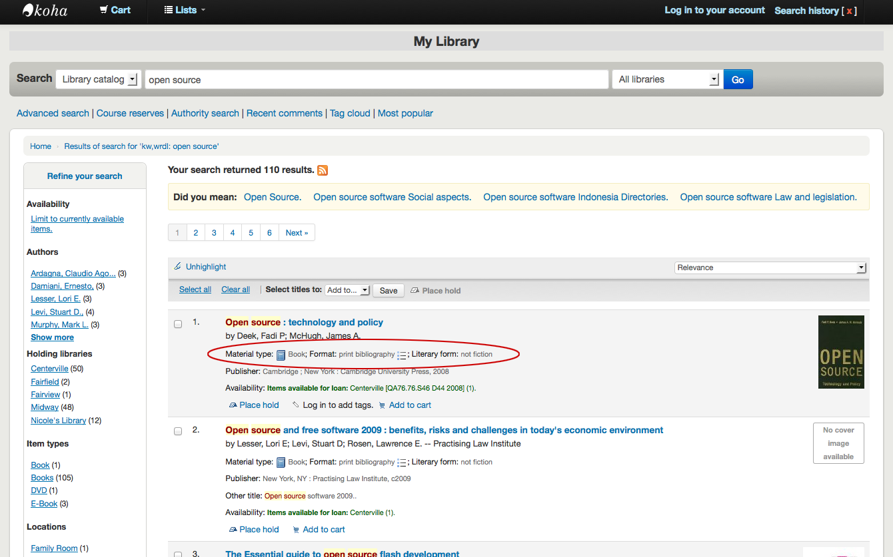
Below each title you will see the availability for the items attached to the record.
Note
Even if you filtered on one library location all locations that hold the item will appear on the search results.
Important
An item’s hold status doesn’t not affect whether or not the item is ‘available’ until the item is in ‘waiting’ status. Items with on-shelf holds will show as available until a librarian has pulled them from the shelf and checked the item in make it show ‘waiting’.

If you have turned on Enhanced content system preferences preferences you may have book jackets on your search results.

If you have set your Did you mean? options you will see a yellow bar across the top of your results will other related searches.

If you performed an advanced search you see an option to go back and edit your advanced search blow the list of results pages.

Filters
To filter your results click on the links below the ‘Refine your search’ menu on the left of your screen
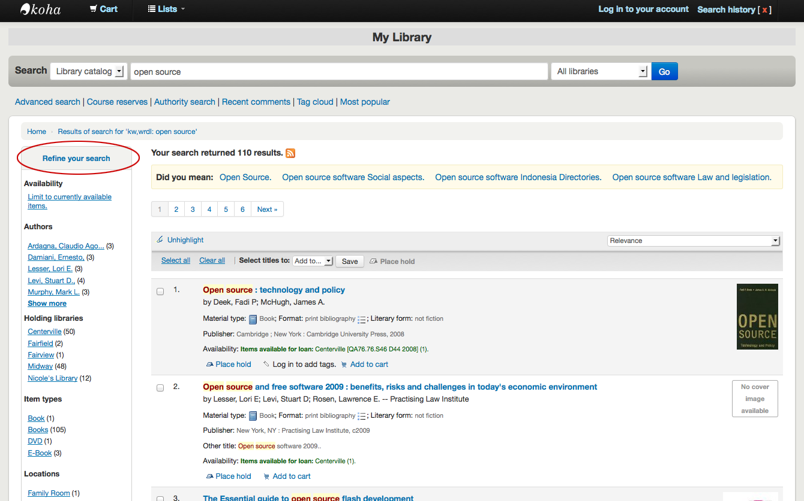
Depending on your setting for the DisplayLibraryFacets system preference you will see filters for your home, holding or both libraries.

After clicking a facet you can remove that filter from your results by clicking the small ‘x’ that appears to the right of the facet.
Search RSS feeds
You will be able to subscribe to your search results as an RSS feed by clicking the RSS icon in your address bar or next to the number of results. To learn more about what RSS feeds are check out this tutorial video.
Subscribing to search results as RSS feeds will allow you to see when a new item is added to the catalog in your area of interest.
Bibliographic record
When you click on a title from the search results, you’re brought to the bibliographic detail of the record. This page is broken down in several different areas.
At the top of your screen will be the title and the GMD:

Below the title the authors will be listed. These come from your 1xx and 7xx fields. Clicking the author will run a search for other titles with that author.

If you have an authority file you will see a magnifying glass to the right of author (and other) authorities. Clicking that magnifying glass will take you directly to the authority record.
If you have your DisplayOPACiconsXSLT preference set to ‘show’ you will see a material type that is determined by values in your fixed fields (learn more in the XSLT material type icons cataloging guide.

Next you’ll see the description of the record you’re viewing:

Following that information you’ll find the subject headings which can be clicked to search for other titles on similar topics
If your record has a table of contents or summary it will appear next to the ‘Summary’ or ‘Table of contents’ label

If your record has data in the 856 fields you’ll see the links to the right of the ‘Online resources’ label

If the title you’re viewing is in a public list then you’ll see a list of those to the right of the ‘List(s) this item appears in’ label and if it has tags they will appear below the ‘Tags from this library’ label

In the tabs below the details you will find your holdings data

Note
You can customize the columns of this table in the ‘Table settings’ section of the Administration module (table id: holdingst).
Any notes (5xx fields) that have been cataloged will appear under ‘Title notes’

If the bibliographic record is linked to a subscription in the Serials module, there will be a ‘Subscriptions’ tab with the subscription and issues information.

Note
You can customize the columns of this table in the ‘Table settings’ section of the Administration module (table id: subscriptionst).
If you’re allowing comments they will appear in the next tab

And finally if you have enabled FRBR and you have other editions of the title in your collection you will see the ‘Editions’ tab.

To the right of the details you’ll find a series of boxes. The first box is a list of buttons to help navigate the search results. From there you can see the next or previous result from your search or return to the results.

Clicking ‘Browse results’ at the top of the right column will open up your search results on the detail page

Below the search buttons you’ll find the links to place a hold, print the record, save the record to your lists, add it to your cart or send to a device (using a QR code).
Another option that will appear on this right hand side bar, if a library is allowing purchase suggestions (see the suggestion system preference), is the ability to ‘Suggest for Purchase’. Clicking this link will bring the user to the purchase suggestion form to fill out.

Clicking ‘More searches’ will show the list of libraries you entered in your OPACSearchForTitleIn preference

Under the ‘Save record’ label you will find a series of file formats you can save the record as. This list can be customized by altering the OpacExportOptions system preference.

If at any time you want to change the view from the ‘Normal’ view to see the Marc or the ISBD you can click the tabs across the top of the record

Lists and the cart
A cart is a temporary holding place for records you’re interested in finding during this session. That means that once you log out of the OPAC or close the browser you lose the items in your cart. A list is a more permanent location for saving items. To learn more about lists, check the Lists in the staff client chapter of this manual.
Lists
Patrons can manage their own private lists by visiting the ‘your lists’ section of their account.

Creating lists
Lists can also be created by choosing the ‘New list’ option in the ‘Add to’ menu on the search results

To create a list the patron simply needs to click the ‘New list’ link and populate the form that appears
The only field required is the ‘List name,’ but the patron can also choose how they want the list sorted and if the list is public or private.
A private list is managed by you and can be seen only by you (depending on your permissions settings below)
A public list can be seen by everybody, but managed only by you (depending on your permissions settings below)
Important
If you aren’t allowing patrons to create public lists with the OpacAllowPublicListCreation preference then patrons will only be able to create private lists.
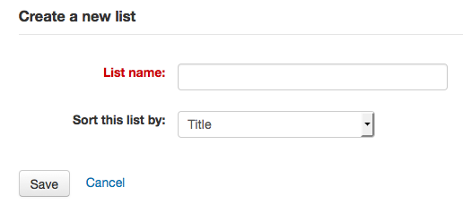
Finally decide what your permissions will be on the list. You can all or disallow:
anyone else to add entries
anyone to remove his own contributed entries
Note
The owner of a list is always allowed to add entries, but needs permission to remove.
anyone to remove other contributed entries
Adding titles to lists
Titles can be added to lists from the search results and/or from the bibliographic record. On the search results options to add items to the list appear below each result and across the top of the results page

To add a single title to a list, click the ‘Save to lists’ option and then choose the list you’d like to add the title to. To add multiple titles to a list check the boxes on the left of the titles you want to add and then choose the list you want to add the titles to from the ‘Add too’ pull down at the top of the screen.
Viewing lists contents
To view the contents of a list, click on the list name under the ‘Lists’ button.

The contents of the list will look similar to your search results pages except that there will be different menu options across the top of the list.
To the right of the list title there is an RSS icon that will allow you to subscribe to updates to the list.
Using the menu options above the list you can place multiple items on hold, download the list contents, email the list or print the list out.
To place a hold on one or more list items check the box to the left of the item and click the ‘Place hold’ link at the top
To download the list contents click the ‘Download list’ link and choose the format you’d like to download the list in
To email the list contents to someone, click the ‘Send list’ link and enter in your email details in the form that pops up

To print the contents of your list out click the ‘Print list’ link
Managing lists
Once the list is saved patrons can begin adding items to it. From the ‘your lists’ tab on the patron record the patron can edit and delete the lists they have created by clicking the appropriate link to the right of the list name.
To edit the list’s title or sorting patrons click the ‘Edit’ link to the right of the list description.
When clicking ‘Delete’ next to a list you will be asked to confirm that you want to delete the list.
The list will not be deleted until the ‘Confirm’ button is clicked to the right of the list you’d like to delete.
If the library is allowing you to share private lists with the OpacAllowSharingPrivateLists preference then you will see the ‘Share’ link on your list of lists and the ‘Share list’ link at the top of each individual list. Clicking this will ask you to enter the email address of a patron.
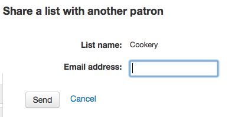
Once the email address is entered Koha will present you with a confirmation message

and will send a message to that patron.
Cart
Adding titles to the cart
Titles can be added to the cart from the search results and/or from the bibliographic record. On the search results options to add items to the cart appear below each result and across the top of the results page
Clicking the ‘Add to cart’ button will add the one title to your cart. To add multiple titles at once, check the box to the left of each result and then choose ‘Cart’ from the ‘Add to’ pull down at the top of the screen. Once titles are added to the cart you will be presented with a confirmation
From the results you will see which items are in your cart and will be able to remove those items by clicking ‘(remove)’.

Managing the cart
Once you have titles in your cart you can manage the contents by clicking on the ‘Cart’ button usually found at the top of the screen. Your cart will open in a new window.

From this window you are presented with several options. Across the top of the cart are several buttons.
First is the ‘More details’ button. Clicking this will show you additional information about the titles in your cart (ISBNs, subjects, publisher info, notes and more).

Next is the option to send the contents of your cart to an email address. This is handy if you want to send the resources you found at the library to your home email account to refer to later or to send to a patron researching a specific topic. Clicking this link will open up a new window that asks for the email address and message to send.

Important
The cart can only be emailed by logged in users. This will prevent your cart email function from being used for spamming.
In addition to sending your cart you can download the contents of your cart in several pre-defined formats or using a CSV profile that you defined in the tools module.
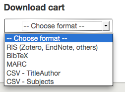
Finally you can print out the contents of your cart by choosing the ‘Print’ link.
In addition to the various different ways to save the contents of your cart, there are ways to add value to the data in your cart. By selecting one or more titles from the cart you can add them to a list (click ‘Add to a list’), place hold(s) (click ‘Place hold’), or tag them (click ‘Tag’). All of these operations follow the same procedure as they do when performing them in the OPAC.
Placing holds
Patrons can place holds on items via the OPAC if they’re logged in and you have the OPACHoldRequests preference set to ‘Allow’. If the item can be placed on hold the option to place it on hold will appear in several different places.
When viewing a list or search results page you’ll see the option to place hold on multiple items by checking the boxes to the left of the results and clicking ‘Place hold’ at the top

When viewing a list or search results page you’ll see the option to place the item on hold below the basic information about the title

When viewing an individual title you’ll see the option to place a hold in the box on the right side of the screen

No matter which of the above links you click to place your hold you’ll be brought to the same hold screen.

Check the box to the left of the items you’d like to place on hold
The title includes a link back to the detail page for the record
The priority shows where in the holds queue this hold will fall
If allowed by your OPACAllowUserToChooseBranch preference the patron can choose where they’d like to pick up their hold. The list of available pickup locations will include all libraries that have ‘Pickup location’ set to ‘Yes’ on the library configuration page.
If you would like to see more options you can click ‘Show more options’
Place hold form with more options
If you have the AllowHoldItemTypeSelection preference set to ‘Allow’ and the record had more than one item type attached you will see an option to choose to limit the hold to a specific item type

If allowed by your OPACAllowHoldDateInFuture preference, the ‘Hold starts on date’ column will show. This field allows the patron to have their hold start on a future date.
By default holds placed in the system remain until canceled, but if the patron fills in a ‘Hold not needed after’ date then the hold has an expiration date.
Important
Expired holds are removed by the expired holds cron job, this is not an automatic process and must be set up by your system administrator
If allowed by the OpacHoldNotes preference then patrons can leave notes about their holds for the library by clicking the ‘Edit notes’ button

Depending on the rules you set regarding item specific holds in your circulation and fines rules the patron will be allowed to choose whether to place the hold on the next available copy and/or a specific copy.

After clicking the ‘Place hold’ button the patron will be brought to their account page where they’ll see all of the items they have on hold.
Enhanced content
Tagging
Depending on your settings for the TagsEnabled, TagsInputOnList and TagsInputOnDetail preferences you may be able to add tags to bibliographic records from the search results and/or bibliographic records. If you are allowing patrons to add tags from the search results screen you will see an input box below each result and a ‘Tag’ option at the top of the screen.

To add a tag to one item, type the tabs (separated by commas) in the ‘New tag’ box and click ‘Add’. You will be presented with a confirmation of your tags being added.

From the results you can also tag items in bulk by clicking the checkboxes on the left and then clicking the ‘Tag’ button at the top. After clicking the button it will change into an input box for you to add tags to all of the items you have selected.

Emojis can also be included using the emoji picker when adding tags

Zotero
Zotero is a Firefox add on that allows for the saving and generating of a bibliography. Learn more about and download Zotero at http://zotero.org.
When on the search results in the Koha OPAC, if you have Zotero installed, you will see a folder icon in the address bar to the right of the URL. Clicking that folder will open up a list of titles on the page for you to pick from to add to Zotero.

Select the titles you want to add to Zotero and then click the ‘OK’ button. This will add the title to Zotero. You can see the title by opening your Zotero library.

Custom RSS feeds
Using the RSS feeds cron job you can generate an RSS feed for any SQL query (for example a new acquisitions RSS feed). The cron job is run on the command line to produce an RSS XML document.
The output should be placed in a directory accessible to the OPAC (or staff) web interface so that users can download the RSS feed.
An example of usage can be found at: misc/cronjobs/rss.pl lastAcquired.conf
Normally the RSS cron job should be run periodically (e.g., daily) to keep the feed up-to-date.
The configuration file (e.g., lastAcquired.conf) lists
name of the template file to use
path of output file
SQL query
The RSS cron job runs the SQL query, then feeds the output of the query through the template to produce the output file.
Important
To use custom RSS feeds you need to turn on the RSS cron job.
OPAC self registration
If you allow it, patrons can register for their own accounts via the OPAC. If you have the PatronSelfRegistration preference set to ‘Allow’ then patrons will see a link to register below the log in box on the right of the main OPAC page.
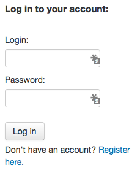
When the patron clicks the ‘Register here’ link they will be brough to a registration page. The options on the registration page can be conrolled by editing the PatronSelfRegistrationBorrowerMandatoryField and the PatronSelfRegistrationBorrowerUnwantedField preferences.
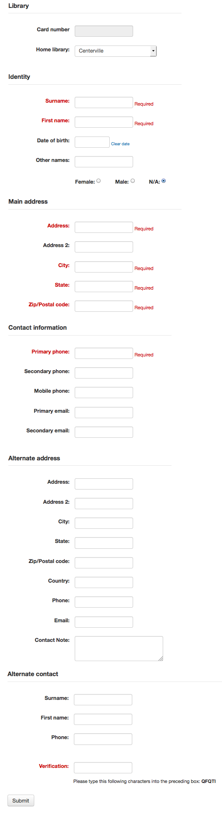
Once the patron has confirmed submitted their registration they will either be sent an email to confirm their account (if you have the PatronSelfRegistrationVerifyByEmail preference to require this) or presented with their new username and password.

Patrons registered in this way will not have a cardnumber until assigned one by the library, but will have access to all OPAC functionality immediately. For this reason it is recommended that you:
set up a provisional patron category for self registered patrons (such as ‘Self Registered) instead of using an existing patron category and set that value in the PatronSelfRegistrationDefaultCategory preference
give this patron category minimal circulation privileges in the Circulation and fines rules (such as allowing a couple holds, but no check outs)
That way patrons will either have to come in to the library to verify their identity before given a cardnumber and the ability to check items out or the library will have to come up with internal policy on generating cardnumbers before providing them to self registered patrons. Once this is done the library can change the category to one that is more appropriate (be it an adult, resident, non resident, student, etc) and add a cardnumber/barcode.
Your account
If the opacuserlogin system preferenceis set to ‘Allow’, patrons can log in and access their account.
Once logged in patrons are brought to their account summary.
If patrons access the home page while logged in, and OPACUserSummary is set to ‘Show’, they will see a small summary of their account instead of the login fields.

From any page on the OPAC, clicking on their name at the top right of the page will bring a patron back to their account.
Resetting your password
If you have the OpacResetPassword system preference set to ‘Allow’, patrons can reset their password by clicking the ‘Forgot your password?’ link found under the login box.

Once clicked, they will be presented with a form asking for their username and their email address.
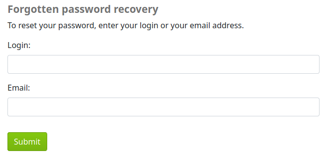
警告
Patrons must have an email address on file to reset their password. If they don’t have an email address already in their file, they will get an error message
The system will then email the patron instructions for resetting their password.
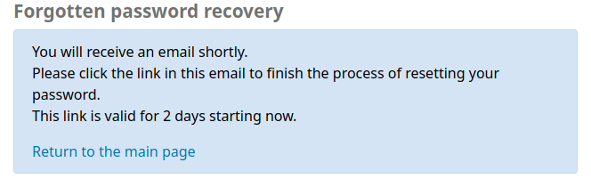
The content of the email can be cutomized with the Notices and slips tool. The code of the letter is PASSWORD_RESET.
Your summary
From the ‘your summary’ tab, patrons will see all of the items they have checked out with the overdue items highlighted in red.
If OpacRenewalAllowed set to ‘Allow’, patrons will be able to renew their checkouts from the OPAC.
If the patron has pending charges exceeding the value set in OPACFineNoRenewals, a note will display explaining that renewals cannot be made.

A note will display if the patron cannot place holds due to their charges exceeding the value set in the maxoutstanding system preference.

If AllowPatronToControlAutoRenewal is set to ‘Allow patrons’, patrons will be able to choose whether or not they want their checkouts to be renewed automatically. If they choose ‘Yes’, items for which automatic renewal is enabled in the circulation rules will renew as expected. If they choose ‘No’, the automatic renewals that would have applied to this patron’s checkouts will not take place.

If you have HTML entered in the OPACMySummaryHTML preference then you will see that to the right of the ‘Fines’ column.
If your patrons would like to see the items barcodes on their list of checked out items you can set up a patron attribute with the value of SHOW_BCODE and authorized value of YES_NO.
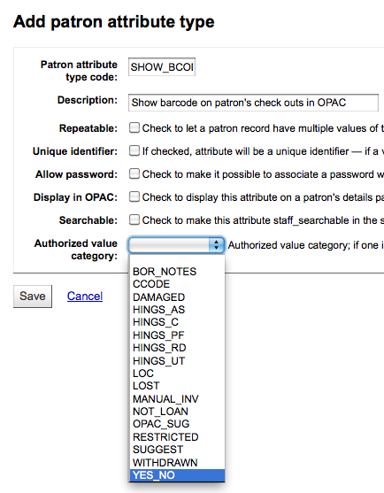
Then on the patron’s record set the value for SHOW_BCODE to yes.

This will add a column to the check out summary in the OPAC that shows the patrons the barcodes of the items they have checked out.

If you would like your patrons to leave a note on an item they have checked out AllowCheckoutNotes preference must be set to allow.
In the patron’s summary of checkouts, there will be an added column to allow the patron to leave a note (for example: missing first page, or DVD is scratched). This note once confirmed by the patron will appear to the staff at the bottom of the staff interface’s home page, and also when the item is checked in.
If their guarantee has allowed it via their privacy, when the guarantor logs in they will see a tab labeled “Relatives’ checkouts” on their summary tab.

Clicking on the ‘Overdue’ tab will show only the items that are overdue.
The ‘Fines’ tab will show just a total of what the patron owes. Clicking on the total will take them to the ‘your fines’ tab where they will see a complete breakdown of their fines and bills. If you don’t charge fines at your library you can turn the display of these tabs off by setting the OPACFinesTab preference to ‘Don’t allow.’

Finally, clicking on the ‘Holds’ tab will show the patron the status of all of the items they have on hold.

Patrons can cancel or suspend (depending on the value of your SuspendHoldsOpac system preference) their own holds if they are not in transit or already waiting for them. When they click ‘Suspend’ they will be presented with the option to choose a date for their hold to resume.
They can also suspend all of their holds indefinitely or until a specific date if they choose by filling in the suspend options at the bottom of the page.
Note
If you have your AutoResumeSuspendedHolds preference set to “Don’t allow” then you will not have the option to put an end date on the hold suspension
Patron flags
If you have flagged your patron’s account they may see one of the following error messages at the top of their account.
Card marked as lost

Patron address in question

Note
this error message will not include a link to the update form if you have OPACPatronDetails set to ‘Don’t allow’
Patron marked restricted

Your fines
If your library charges fines the next tab on the left is ‘your fines’. Opening this tab will show the patron an entire history of their accounting at the library.

If you are allowing patrons to pay their fines using PayPal with the EnablePayPalOpacPayments preference there will be checkboxes to the left of each fine with an outstanding amount.

At the bottom the patron will see the option to pay with PayPal for the items they have checked.
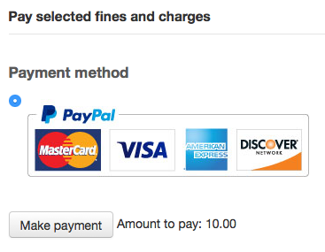
After paying they will be presented with a confirmation

And you will see that the fine was paid using PayPal on the staff side.
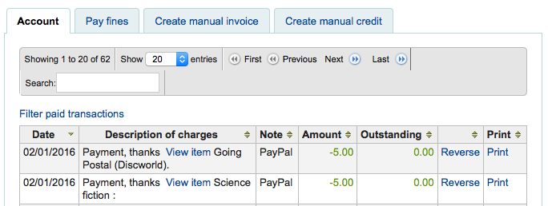
Your personal details
If you have your OPACPatronDetails preference set to ‘Allow’, your patrons will see a form filled in with their contacting information by clicking on the ‘Your personal details’ tab. You can control what fields patrons see and can modify via the OPAC by setting the PatronSelfRegistrationBorrowerMandatoryField PatronSelfRegistrationBorrowerUnwantedField preferences.

Patrons can edit their details in this form and click ‘Submit changes’ to have their edits sent to the library for review before their record is updated. Staff will see all patrons requesting modification to their record listed below the modules on the main dashboard along with anything else awaiting library attention.
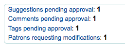
If the OPACPatronDetails preference is set to ‘Don’t allow’ then patrons will simply see their details and a message stating that they should contact the library for changes.

Your tags
If your library has TagsEnabled set to ‘Allowed’ then the next tab on the left will be ‘your tags’. This tab will show patrons all of the tags in the system as a cloud and then all of the tags they have applied in a list format. From here patrons have the ability to remove tags that they have added if they want.

Change your password
Next, if you have OpacPasswordChange set to ‘Allow’ the next tab will be ‘change your password,’ where patrons can change their password for logging into the OPAC. Patrons will be presented with a standard form asking them to enter their old password and then their new password twice.

Your search history
If you have your EnableOpacSearchHistory preference set to ‘Allow’ then your patrons can access their search history via the ‘your search history’ tab.

The search history is a record of all searches run by the patron. Clicking on any of the search phrases will re-run the search for the patron. The search history can be deleted by the patron at any time by clicking the ‘Delete your search history’ link found at the top of this tab or by clicking the little red ‘x’ next to the ‘Search history’ link at the top right of the OPAC.

Your checkout history
Depending on your library’s setting for opacreadinghistory your patrons may see the ‘your checkout history’ tab next. This will show the patron their entire borrowing history unless they have asked the library to not keep that information via the ‘your privacy’ tab which will appear if you have the OPACPrivacy preference set to ‘Allow.’

Your privacy
The ‘your privacy’ tab will appear if you have both the opacreadinghistory and the OPACPrivacy preferences set to ‘Allow.’ This tab will allow the patrons to decide how the library keeps their circulation history data.

The patron can choose from three options:
Forever: keep my reading history without limit. This is the option for users who want to keep track of what they are reading.
Default: keep my reading history according to local laws. This is the default option : the library will keep your reading history for the duration permitted by local laws.
Never: Delete my reading history immediately. This will delete all record of the item that was checked-out upon check-in.
Depending on the patron’s suggestions the contents of the ‘Your reading history’ tab and the ‘Circulation History’ tab in the staff client may change.
Regardless of the patron’s choice they can delete their reading history in bulk at any time by clicking the ‘Immediate deletion’ button.

Clicking this button will not delete items that are currently checked out, but will clear the patron’s past reading history.
Important
In order for the patron to be able to delete their reading history you must have the AnonymousPatron preference set.
If you’re allowing guarantees to grand permission to their guarantors to view their current checkouts with the AllowPatronToSetCheckoutsVisibilityForGuarantor preference they will see that option on this screen.

When the guarantor logs in they will see a tab labeled “Relatives’ checkouts” on their summary tab.
Your holds history
If the OPACHoldsHistory system preference is set to ‘Allow’, patrons will be able to see all their current and past holds.

Your purchase suggestions
If your library allows patrons to make purchase suggestions the next tab will show all suggestions that the patron made to the library and their statuses. To disable this tab and the suggestion functionality set the suggestion preference to ‘Don’t allow.’

If you have OPACViewOthersSuggestions set to ‘Show’ then patrons will be able to search suggestions from the top of this list.
Your messaging
If your library has the EnhancedMessagingPreferences and the EnhancedMessagingPreferencesOPAC preferences set to ‘Allow’ then your patrons will be able to choose which messages they receive from the library (with the exception of overdue notices which the library controls).

If you use an outside driver for sending text messages set with the SMSSendDriver preference, you will see an additional column to receive these messages as SMS (or text messages) and a field for a cell (or SMS) number.

If you are using the Email protocol for sending text messages set with the SMSSendDriver preference, you will see an additional column to receive these messages as SMS (or text messages), a field for a cell (or SMS) number, and a pull down listing cellular providers entered in administration.

If you are using the Itiva Talking Tech service you will see an additional column to receive these messages via Phone.

These notices are:
Advanced notice: A notice in advance of the patron’s items being due (The patron can choose the number of days in advance)
Item checkout: A notice that lists all the of the items the patron has just checked out and/or renewed, this is an electronic form of the checkout receipt
Hold filled: A notice when you have confirmed the hold is waiting for the patron
Item due: A notice on the day and item is due back at the library
Item check-in: A notice that lists all the of the items the patron has just checked in
Patrons can choose to receive their notices as a digest by checking the ‘Digest only?’ box along with the delivery method. A digest is a combination of all the messages of that type (so all items due in 3 days in one email) in to one email instead of multiple emails for each alert.
If the TranslateNotices preference is set to Allow the patron will also see an option to choose ‘Preferred language for notices’ with a dropdown list of available languages.
Important
You must choose a delivery method (SMS or email or phone) along with ‘Digest only?’ if you would like to receive a digest of the messages.
Your lists
If your library has the virtualshelves set to ‘Allow’ they will see the ‘your lists’ tab. From here your patrons can review public lists and create or edit their own private lists.
Ask for a discharge
If you have enabled the useDischarge preference then patrons will be able to request a discharge via the OPAC.

From here patrons can request a discharge

And will receive confirmation of their request.

Your routing lists
If you are named as a recipient on any serial routing lists you will see them listed here. The following note is displayed “You are subscribed to the routing lists for following serial titles. If you wish to make changes, please contact the library”.
Your interlibrary loan requests
If your library has the ILLModule preference set to ‘Enable’ patrons will have the option to make ILL requests when logged in to their OPAC account. From here they can view their existing requests and place new ones.

To place a new interlibrary loan request click on ‘Create a new request’ and choose a request form.

Note
The options displayed are dependent on your ILL configuration. See the ILL backends wiki page at https://wiki.koha-community.org/wiki/ILL_backends further explanation.
Note
If you have entered copyright text in the ILLModuleCopyrightClearance preference the text displays here and you need to click ‘Yes’ to accept before continuing.
Complete the publication details as fully as possible. Depending on the form in use you may see the option to add Custom fields for additional information such as notes. Destination branch is a required field, this is the branch you would like the request to be sent to.

Click on ‘Create’ to submit your request to the library for processing.
Your submitted request will be listed with a status of ‘New request’. Once processed the status will be updated to ‘Requested’.
Click on ‘View’ to make changes or cancel your request.
You cannot edit the form details but you can add a note to request a modification and then click on ‘Submit modifications’ at the bottom of the screen. Your modification will be sent to the library for processing.
For new requests you will also have the option to ‘Request cancellation’. Your request will be updated with the status ‘Cancellation requested’ and can then be removed by library staff.
Purchase suggestions
If your library has the suggestion preference set to ‘Allow’, patrons will have the option to make purchase suggestions in several areas in the OPAC.
If you are allowing everyone to see the purchase suggestions made by others with the OPACViewOthersSuggestions preference, there will be a link at the top of your OPAC under the search box.

There will be a link when the patron finds nothing for their search.

There will be a ‘Suggest for purchase’ option in the detailed view of a bibliographic record.
And there will be a link in the Your purchase suggestions tab in the patron’s account.

Clicking any one of these links will open the purchase suggestion form.

The informational text at the top of the form can be replaced using the HTML customizations tool, display location OpacSuggestionInstructions.
From the form only the ‘Title’ is required by default.
Mandatory fields can be set using the OPACSuggestionMandatoryFields system preference.
The OPACSuggestionUnwantedFields system preference can be used to hide unnecessary fields.
The item type list can be edited by editing the SUGGEST_FORMAT authorized value list.
The ‘Reason for suggestion’ list can be edited by editing the OPAC_SUG authorized value list.
You can change the text at the top of the form using the HTML customizations tool
Once the form is submitted the purchase suggestion will appear in the acquisitions module for the librarians to manage.
If a purchase suggestion has been ordered through the acquisitions module, the patron’s purchase suggestion title will be clickable and bring the patron directly to the ordered record in the OPAC.
Comments
Patrons can leave comments in the OPAC if you have the OPACComments preference set to allow this. Each bibliographic record has a comments tab below the bibliographic information.
If the patron is logged in they will see a link to add a comment to the item. Clicking this link will open a pop up window with a box for their comments.
Once the comment has been typed and the ‘Submit’ button clicked, the patron will see their comment as pending and other patrons will simply see that there are no comments on the item.
Once the comment is approved the patron will see the number of comments on the ‘Comments’ tab and their comment labeled amongst the other comments. If you have set your ShowReviewerPhoto preference to ‘Show’ then you’ll see the patron’s photo pulled from the Libravatar library.
Other patrons will see the comment with the name of the patron who left the comment (unless you have set the ShowReviewer preference to not show patron names).
If you have your OpacShowRecentComments set to show then you’ll see the approved comments on that page.
From this page patrons can subscribe to the recent comments using RSS if they would like.